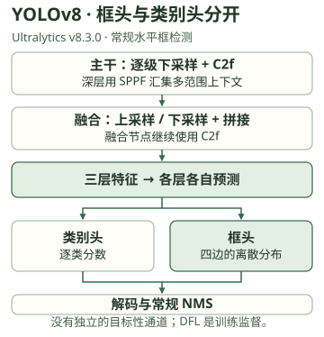
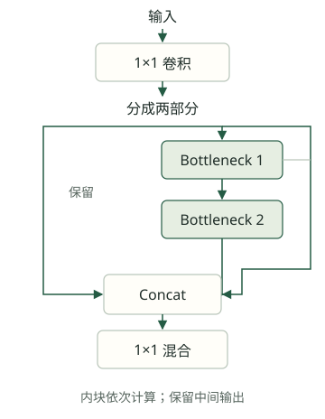

YOLOv8 · 常规水平框检测
一张图上有许多预测位置，
怎样得到一个可信的框？
以手机边缘的一处磕碰为例：模型既需要局部纹理来找准边缘，也要看周围是不是平滑的反光。YOLOv8 在不同分辨率上融合这两类信息，再让每个位置分别回答“是什么”和“边界在哪”。只讲这两步还不够：训练时要挑出该学它的位置，推理时还要把重复结果合起来看。
以 Ultralytics 官方 v8.0.196 的标准三尺度 Detect 为准，不涵盖分割、姿态或其他检测头。以下数字用于说明运算，不是手机缺陷实测结果。
01 · 主线① 特征提取与多尺度融合
先在同一层保留不同深度的特征，再在不同层之间传信息。
C2f 解决的是同一层内的信息复用。先用 1×1 卷积调整通道，分出两组。其中一组依次经过瓶颈块；最后把起初的两组和每个瓶颈块的输出一起拼接，再用 1×1 卷积混合。这样，最后一层既能用早期特征，也能用经过更多变换的特征，不必只看整串变换的最后一步。
跨尺度靠的是另一组连接。深层经过 SPPF 汇集不同范围的信息，再逐级上采样，与较浅层的细节特征拼接。融合过的细层随后逐级下采样，让较粗的层也能利用这些信息。640×640 输入最后得到 80×80、40×40、20×20 三层预测网格。C2f 加工各个节点；它本身并不决定上采样接到哪一层。


02 · 主线② 检测头与边界框表示
直接从参考点量到四条边，省掉预设宽高模板。
每个网格位置各有一个参考点。分类分支输出各类别的分数；回归分支输出参考点到左、上、右、下四条边的距离分布。这样的 Anchor-free 设计仍然有坐标参考，只是不必为每个项目重新挑一组宽高模板。
算一个框。沿用一个宽 80、高 8 像素的框，左上角 (4,16)，右下角 (84,24)。在步长为 8 的层上，若参考点 (44,20) 被分配负责这个框，它到四边的距离是 (40,4,40,4) 像素，即 (5,0.5,5,0.5) 个网格单位。反过来，从参考点向左减 40、向上减 4、向右加 40、向下加 4，就得到原框。预测位置并不必须落在物体中心。
一个位置为什么要输出 64 个回归值？它们还是一个框吗？
每条边输出 0 到 15 共 16 个距离档位的分数，四条边合计 64 个。每边独立做 softmax 并取加权平均，得到一个连续距离。比如距离 0 和 1 的权重各占一半，解码就是 0.5 格。每个位置仍然只解码出一个框。
固定版本的两个分支各自经过两层普通 3×3 卷积，再用 1×1 卷积输出所需通道。在 80 类 COCO 配置里，一个位置原始输出 64＋80＝144 个数；解码后是 4 个坐标加 80 个类别分数，没有单独的目标性分数。分支的拆分发生在特征计算阶段。
03 · 主线③④ 样本分配与训练监督
框写得出来，还要决定哪个位置有资格学它。
先分责任。训练时，一个标注周围有多个参考点。TAL 结合这次预测的目标类别分数与定位质量，对位于标注框内的候选排序。这个配方每个标注最多选 10 个，争用同一位置时再处理冲突。一个标注可以监督多个位置；“在框内”和“最终是正样本”是两步。
再算误差。分类目标包含匹配质量，用 BCE 监督类别输出，背景位置的类别目标为零。被选中的前景位置还要学定位：CIoU 约束解码后整个框的几何误差；DFL 约束每条边的距离分布。上例的 0.5 格落在档位 0、1 之间，DFL 给相邻两档各一半目标权重。两种定位损失看的是同一个框的不同表示。
这三步的分工可以倒过来检查：TAL 选错了位置，再准确地算损失也教错了对象；已经选对了位置，分配器也不会替网络把四条边画准。
04 · 主线⑤ 重复预测与 NMS
训练时允许多个位置报同一处损伤，推理时就可能出现重复框。
推理时没有标注，也不再运行 TAL。三个尺度合计有 8,400 个候选位置；先解码，再按类别分数过滤。若同一处磕碰留下多个高度重叠的同类框，NMS 优先保留高分框，抑制与它重叠超过阈值的低分框。最终结果再映射回原图。
这解释了两个容易混淆的词：Anchor-free 说的是预测前不放宽高模板；能否免 NMS 取决于模型是否还会输出需要消除的重复框。标准 YOLOv8 仍需要这一步。相邻两处真实损伤若分别被框出但重叠很高，也可能受到抑制。
05 · 主线⑥ 场景适配
遇到漏检，先确认损伤信息在哪一步消失。
把原始照片和实际送入模型的缩放图放在一起看。若窄边缩放后已几乎不可见，换一套分配规则并不会补回纹理；优先对照输入尺寸或裁剪策略。如果输入仍清楚，就检查漏检样本在分数过滤和 NMS 前后是否还有对应候选：有框但分数低，与有两个正确框却被去重，是两种不同的问题。
改变结构或输入尺寸时，在同一批测试图上比较固定误提示水平下的召回，再到目标硬件测吞吐和延迟。分布式回归能表达亚网格距离，不能据此推出任何细小缺陷都能检测，也不能单凭参数量判断哪个版本实际更快。
版本对照
v8 值得记的是检测配方和统一接口，不是首创四边距离。
和 YOLOX 一样，v8 不预设宽高模板，也分开计算分类和定位特征。真正改变的是框的表示（中心偏移、宽高 → 四边距离分布）、打分（独立目标性乘类别 → 直接用类别分数）和样本分配（SimOTA → TAL）；这里是并排对照，不是按版本号推断继承。四边距离至少在 2019 年的 FCOS 中已有，DFL 和 TAL 也都有更早的论文。
为什么用过 v8-Seg 的人会记住它？把检测权重换成分割权重，并提供实例轮廓标注，仍能用同一套 Python 接口或命令行训练、验证、预测和导出。Seg 会额外输出每个实例的掩膜，这不是检测权重自动多出一项能力。统一的是工作流程；导出后仍要核对目标后端支持的算子、后处理和数值精度。